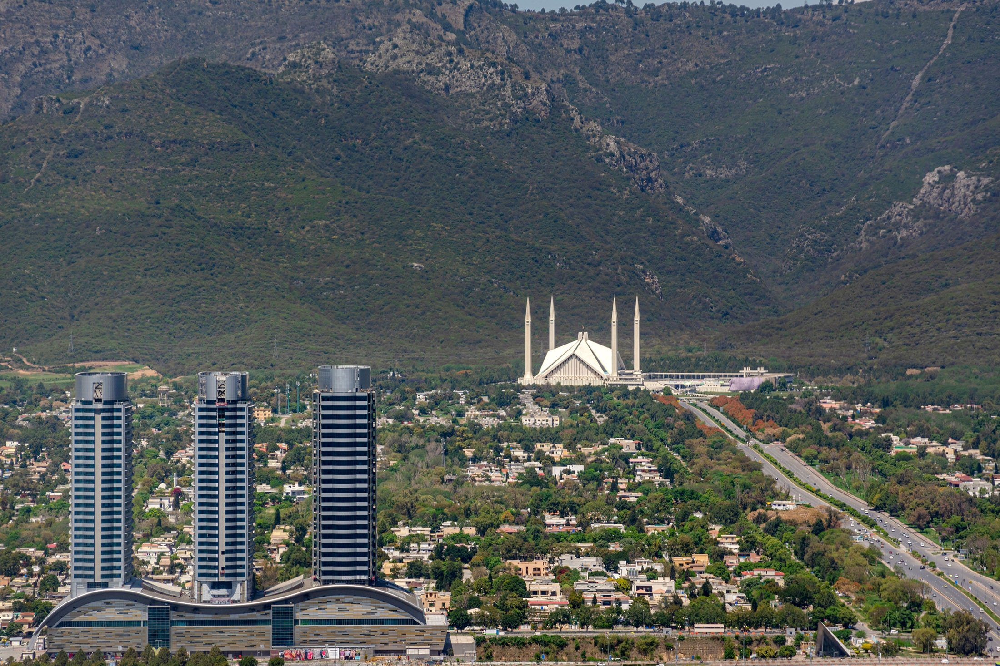

Islamabad is the capital city of Pakistan, and is administered by the Pakistani federal government as part of the Islamabad Capital Territory. It is the ninth-largest city in Pakistan, while the larger Islamabad–Rawalpindi metropolitan area is the country's third-largest with a population of about 4.1 million people.[6] Built as a planned city in the 1960s to replace Karachi as Pakistan's capital, Islamabad is noted for its high standards of living, safety and abundant greenery.
Lahore is the capital of the Pakistani province of Punjab and is the country's 2nd largest city after Karachi, as well as the 26th largest city in the world. Lahore is one of Pakistan's wealthiest cities with an estimated GDP (PPP) of $84 billion as of 2019. It is the largest city and historic cultural centre of the wider Punjab region and is one of Pakistan's most socially liberal, progressive,and cosmopolitan cities.
Peshawar
Peshawar is the capital of the Pakistani province of Khyber Pakhtunkhwa and its largest city. It is the sixth-largest city in Pakistan, and the largest Pashtun-majority city in the country. Situated in the broad Valley of Peshawar just east of the historic Khyber Pass, close to the border with Afghanistan, Peshawar's recorded history dates back to at least 539 BCE, making it the oldest city in Pakistan and one of the oldest cities in South Asia.

Faisalabad
Formerly known as Lyallpur, is the third-most-populous city in Pakistan after Karachi and Lahore respectively, and the second-largest in the eastern province of Punjab. Historically one of the first planned cities within British India, it has long since developed into a cosmopolitan metropolis. Faisalabad was restructured into city district status; a devolution promulgated by the 2001 local government ordinance (LGO). The total area of Faisalabad District is 5,856 km2 (2,261 sq mi) while the area controlled by the Faisalabad Development Authority (FDA) is 1,280 km2 (490 sq mi). Faisalabad has grown to become a major industrial and distribution centre because of its central location in the region and connecting roads, rails, and air transportation.